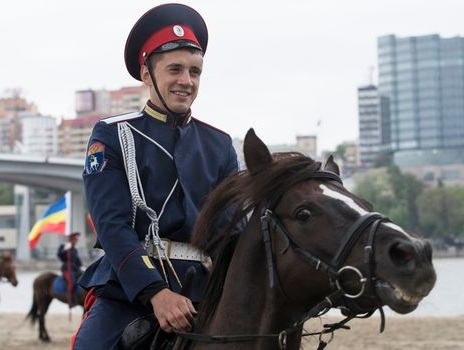
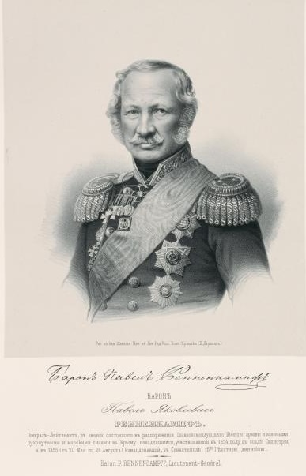

D’une superficie de 15 millions de déciatines (16.387.500 hectares) les terres fertiles du Don étaient arrosées par le Fleuve Don et ses affluents Le Khoper, Manytch, le Donetz.
Le pays était bordé au Sud par la mer d’Azov, le territoire des cosaques du Kouban, au Nord par le gouvernement de Voronèje, à l’Ouest par les gouvernements de Karkhov et de Iékaterinoslav, à l’Est par les gouvernements de Saratov et d’Astrakhan. Ces limites ont été fixées en 1795.
La Russie, au moment de la Première Guerre mondiale, à la veille de son implosion de 1917, les Cosaques sont répartis sur ses frontières au sein de onze voïskos, des armées territoriales disséminées sur les marches de l’Empire: 1) le Don; 2) le Kouban; 3) le Terek; 4) Astrakhan; 5) l’Oural; 6) Orenbourg; 7) la Sibérie; 8) les Sept rivières (Semiretchinsk); 9) la Transbaïkalie; 10) l’Amour; 11) l’Oussouri.
Le Don était officiellement reconnu comme appartenant pour l’Éternité au voïsko cosaque.
Le premier sceau impérial du voïsko des cosaques du Don représentait un cosaque nu, assis sur un baril de vin, armé de son sabre et de son fusil.
Ce sceau fut instauré par Pierre le Grand, suite à une anecdote « vécue ». (voir l’anecdote).
Avant cela, l’emblème des cosaques du Don représentait un cerf transpercé d’une flèche cosaque « plus rapide que le cerf au galop ».
Le gouvernement russe dès le 17e siècle utilisait la troupe des cosaques du Don comme force armée dans les guerres avec la Turquie et la Pologne. Pour « le service » la compensation était de l’argent, de la poudre, du plomb, du drap et du pain.
Les cosaques du Don acceptaient dans leur voïsko les étrangers, à condition qu’ils soient baptisés Chrétiens selon le rite orthodoxe.
Il y avait parmi eux des grecs, des polonais, des allemands…
Leur atamans ne devaient porter d’autres prénoms que l’un de ceux du calendrier grec.
Les cosaques étaient craints pour les raids qu’ils opéraient avec adresse , rapidité, et férocité. Lorsqu’ils étaient en marche, l’herbe haute des steppes les rendait presque invisibles.
Ils attaquaient par surprise les camps musulmans qu’ils détruisaient, pillaient et brûlaient, pour revenir ensuite au voïsko chargés de butins, et suivis de troupeaux de bétail. Il y avait souvent quelques jeunes et jolies captives, dont certaines devenaient par la suite femmes de cosaques.
Ils avaient appris des asiates à passer les rivières et les fleuves. Ils plaçaient les selles et les paquetages sur des gerbes de roseaux liées entre elles attachées à l’aide d’une corde au cou ou à la queue de leur monture, et le cosaque nageait à côté de son cheval.
À partir d’Ivan le Terrible, les tsars de Russie s’attachent les services des cosaques du Don, notamment en leur envoyant fournitures, munitions, vivres, tant pour s’adjoindre les services de cette cavalerie d’élite, que pour les maintenir dans un état de soumission, les empêchant de se retourner contre le pouvoir russe. Les cosaques conservent cependant une forte autonomie et liberté d'action. La première capitale des cosaques était Razdorskaïa, puis en 1644 Tcherkassk. En 1805 c’est Novotcherkassk qui devient la capitale des cosaques du Don.
En 1855, Toute la population masculine cosaque était engagée à effectuer un service militaire obligatoire, en s'armant, se vêtant, et en acquérant l'équipement et les chevaux à ses frais. Les officiers recevaient les titres de noblesse héréditaire, des terres et des serfs. S'établir sur le territoire cosaque était interdit aux personnes étrangères, sauf autorisation.
Les Cosaques de l’Empire russe étaient considérés comme privilégiés. Ils possédaient de grandes parcelles de terrain et était exemptés de taxes d'État.
En échange, ils devaient effectuer un service militaire. Au début du 20ème siècle, tous les cosaques étaient militaires actifs pendant 4 ans. Pendant 16 autres années les cosaques étaient considérés comme réservistes.
Pendant toute cette période, ils devaient être disponibles pour participer à une campagne à tout moment.
Ils devaient acquérir, l’équipement militaire de base et le cheval, et l’entretenir à ses frais. La carabine et le sabre (Chachka) étaient fournis par l’état.
Le coût d'un cheval variait entre 120-200 roubles, deux paires de bottes -13 roubles, une selle - 25 roubles, deux paires de fers à cheval - 1 rouble.
Au total, la liste principale comprenait plus de vingt articles, matériel d’entretien pour le harnachement du cheval, chemises, sous-vêtements, bottes etc...
De plus, le Cosaque du Don devait prévoir du fourrage et du foin pour les trois premiers jours et, à ses frais, se fournir en thé, sucre et pain.
Ainsi, tout ce matériel coûtait à la famille du cosaque près de 225-300 roubles, montant énorme pour cette époque.
Le service militaire complet de quatre ans représentait pour le Cosaque une dépense de plus de mille roubles.
A titre de comparaison, le salaire d’un électricien en activité à Saint-Pétersbourg à cette époque était de 12-13 roubles par mois. Une vache valait par contre seulement 5 roubles au pays du Don.
Quand le cosaque du Don partait en guerre, il emportait avec lui un peu de terre natale contenue dans un petit sachet de peau qu’il portait sur sa poitrine. Il ne s’en séparait jamais. S’il était tué en terre étrangère, cette poignée de terre était ensevelie avec lui.
Au début de leur existence, les cosaques du Don ne cultivaient pas la terre, l’agriculture ayant commencé chez eux seulement au XVIIe siècle, grâce notamment aux cultivateurs expérimentés petits russiens émigrés au pays du Don.
Ce n’est qu’au XVIIIe siècle que les cosaques se mirent à cultiver.
Les chartes du début du XIXe siècle (de 1811-1817) confirmait les avantages octroyés aux cosaques du Don :
« Propriété des terres qu’ils occupaient, exclusivité de la pêche dans les bouches du Don et dans la baie de la mer d’Azov. Le libre commerce du vin et l’exemption de taxes sur le commerce à l’intérieur du voïsko »
Pierre le Grand leur avait déjà accordé des droits de pêche sans payer de taxes, en échange des services rendus à la couronne.
Avant la 1ere Guerre mondiale, le pays du Don produisait près de 16 millions de pouds (16,380 kg) de grains de blé, plus du lin et d’autres céréales. Ils élevaient du bétail et des porcs. Près de 900.000 chevaux de leurs haras se nourrissaient des steppes du Don.
Outre les produits de l’agriculture, de la pêche et l’élevage, un autre produit faisait la richesse du Don : Le charbon. Les mines étaient exploitées pour chauffer les « kourènes » (maisons cosaques) des stanitsas voisines. Elles ont pris ensuite un caractère commercial, pour atteindre 163.000 tonnes en 1895.
Au XVIIIe siècle, les progrès réalisés dans le voïsko du Don ont permis à beaucoup de cosaques de devenir de célèbres artistes, architectes et savants. C’est en 1765 que furent fondées les premières écoles publiques dans les stanitsas.
À Tcherkassk s’ouvrit la principale école populaire, et le premier lycée sur le Don.
À la fin de l’empire, il existait sur le Don deux instituts polytechniques, un à la capitale Novotcherkassk et un à la stanitsa Goundorovskaya (une des plus importantes) . Il y avait une université à Rostov sur le Don, un institut vétérinaire, un d’agriculture, un de commerce, un d’archéologie, une faculté de médecine pour femmes, une université populaire, un institut du corps enseignant, seize lycées mixtes, huit lycées de jeunes filles, sept écoles professionnelles, deux écoles commerciales, quatre écoles techniques, une école des Ponts et Chaussées, six séminaires, etc.
Les trois grandes villes du territoire du Don étaient
Novotcherkassk (la capitale)
Rostov sur le Don
Taganrog
Sous l’uniforme des cosaques du Don se sont distingués de nombreux officiers, dont quatre grands généraux russes:
1°) Alexandre Vassiliévitch Souvorov (1730-1800)
2°) Matveï Ivanovitch Platov
3°) Pavel Iakovlevitch de Rennenkampf
4°) Iakov Petrovitch Baklanov
Alexandre Vassilievitch Souvorov était un des plus célèbres hommes de guerre russes. Il descendait d’un suédois, nommé Souvor, émigré en 1622.
Souvorov disait que toute sa tactique se résumait en trois mots « Stoupaï i beï ! » (en avant et frappe!).
Il reçut son baptême du feu avec ses cosaques. C’est à la tête d’une sotnia cosaque qu’il fut blessé pour la première fois, durant la Guerre de Sept Ans.
Dès lors, il ne se séparera plus de son cheval cosaque et n’en voudra jamais monter d’autres.
Il ne se séparait jamais davantage de son ordonnance fidèle, l’Ouriadnik Evseï Seleznëv, un cosaque du Don de la stanitsa Berezovskaya, qui le soignait comme un bébé, pendant les campagnes, avant et après les batailles…
Le général A.V. Souvorov deviendra le chef à perpétuité du 1er régiment du Don .
Le plus grand des chefs cosaques du Don était l’Ataman Matveï Ivanovitch Platov.
Né vers 1765 sur les rives du Don, d’une famille cosaque d’origine grecque.
Il devint Ataman, et mena ses cosaques du Don sur toutes les batailles. Général de cavalerie depuis 1809, il prit part à toutes les guerres de l' empire russe de la fin du XVIIIe -début du XIXe siècle
Faits d'armes :
Bataille de Dürenstein
Bataille d'Austerlitz
Bataille d'Eylau
Bataille de la Moskova
Siège de Dantzig (1813)
Bataille de Leipzig
C’est lui qui fit transporter la capitale des cosaques du Don de l’ancienne Tcherkassk à Novotcherkassk.
Quand Napoléon dut abandonner Moscou, pour entamer la grande retraite, Platov rassembla 35.000 cosaques du Don. Trois générations de cosaques s’étaient rassemblées sous son commandement pour traquer les troupes françaises, faisant prisonniers un millier d’officiers et près de 40.000 soldats.
Les Français ne savaient pas que notre cosaque était né à cheval, avait été baptisé à cheval, il mourrait à cheval.
C’est l’ataman Platov qui avait dit « Pour le cosaque du Don, le cheval est un Ami, le sabre une distraction ».
Il a été inhumé au cimetière de Novotcherkassk en 1818.
Pavel Iakovlevitch de Rennenkampf
N’était, pas plus que Souvorov, originaire du Don, mais grâce à lui aussi le prestige des cosaques du Don augmente au début du XVIIIe siècle.
Né en Livonie (Lettonie, annexée par la Russie en 1772) en mars 1790, il s’engage dans l’armée en 1812, après avoir exercé le métier de géomètre dans le civil.
Il participe à la bataille de Borodino (Moskowa), se retrouve ensuite au Caucase où il exerce ses talents de géomètre en créant les plans de la Transcaucasie.
Il commande des détachements de cosaques du Don lors de la guerre russo-turque de 1828, et reçoit le sabre d’Or gravé « pour bravoure ».
Il conquiert et pacifie l’Ossétie et le Daghestan, où il inflige quelques solides raclées à l’Imam Chamil avec ses cosaques du Don.
Décédé en 1857, il repose aujourd’hui au cimetière luthérien de St-Petersbourg.
Iakov Petrovitch Baklanov
Issu de la noblesse cosaque du Don, né dans la stanitsa Gougninskaya (devenue en 1878 la stanitsa Baklanovskaya en son honneur).
Sa réputation de batailleur est rapidement connue de ses adversaires caucasiens, qui l’avaient surnommé « Chaïtan » (diable).
Il entre dans la légende jusque dans les chansons épiques tchétchènes. Il devient le commandant du 17eme Régiment des cosaques du Don, qu’il mène dans toute une série d’expéditions et d’exploits, toujours pendant les guerres du Caucase.
En1850, il fut nommé commandant du 17e régiment de cosaques du Don.
Son fanion noir était brodé en son centre d’un crâne humain et de deux tibias, et de l’inscription
« Чаю воскресения мертвых и жизни будущаго века. Аминь ».
« Je crois à la résurrection de la chair et à la vie éternelle, amen ».
Nicolas II a remis personnellement le fanion de Baklanov au 17eme rgt du Don, dont les cosaques portaient depuis la « papakha » ornée d’un crâne et des deux tibias.
Dans les chants cosaques consacrés à Baklanov, il est fait mention de la « terrible frappe de Baklanov » - pour avoir coupé un cavalier avec sa chachka en deux de l'épaule à la au pommeau de la selle !
On citait ces paroles de Baklanov
« Prouve aux ennemis que toutes tes pensées ne sont pas pour ta vie, mais pour la gloire et l’honneur de cosaques du Don. Je serai parmi vous, et je vous conduirai au combat, au cri légendaire de Iermak-Dieu avec nous ! ».
Épilogue
Ils ne se doutaient pas des évènements qui allaient ensanglanter la Russie, et leur peuple pendant la guerre civile.
À la fin de 1918 et au début de 1919, le Front Tsaritsyne de l' armée du Don subit une grave défaite contre les bolcheviks lors de l'opération Voronezh-Povorino .
L’armée du Don s’est retirée vers le sud, mais de nombreux cosaques du Haut-Don sont rentrés chez eux dans l’espoir de parvenir à un accord de paix avec l’Armée rouge. Mais l'armée rouge a ordonné aux cosaques de rendre toutes les armes dans les 24 heures, sous la menace d'exécution. Ils ont également décidé de confisquer la propriété aux « riches et bourgeois » et toute somme, à l'exception de la monnaie soviétique, était interdite. Au début du soulèvement, près de 300 Cosaques avaient été abattus et les rumeurs d'exécutions faisant état de listes d'exécutions de centaines de Cosaques de chaque village bouleversaient complètement les Cosaques du Haut Don. Mais les cosaques du Don ont réussi par la suite, avec l'aide des troupes « Blanches » à défaire les Rouges.
Partager cette page